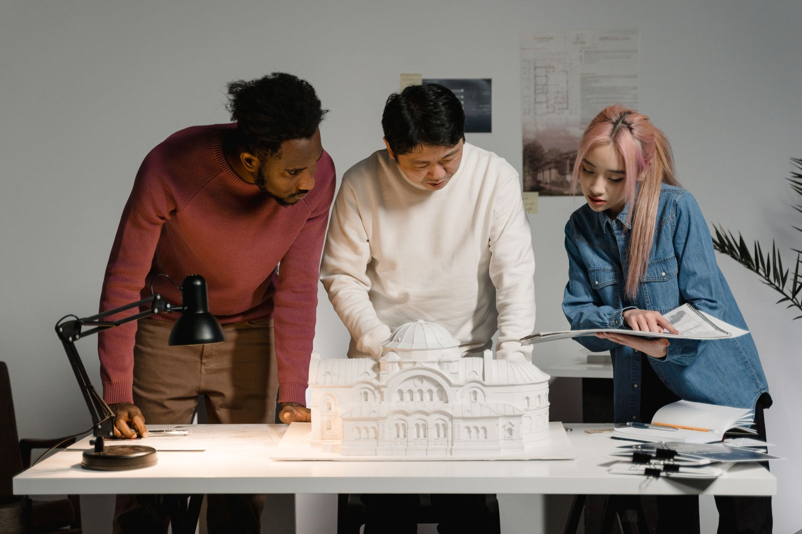
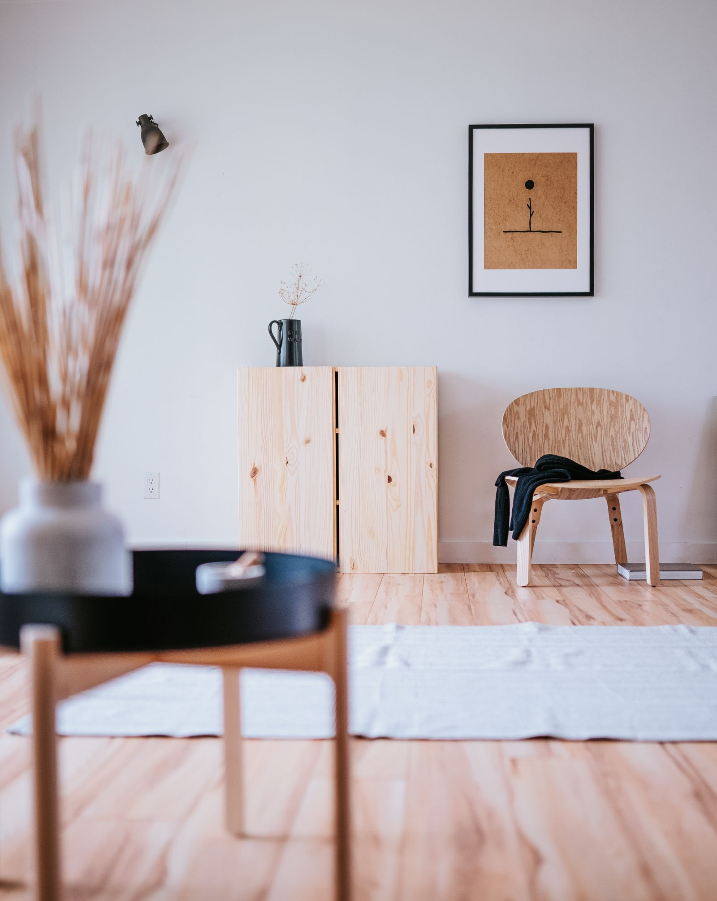
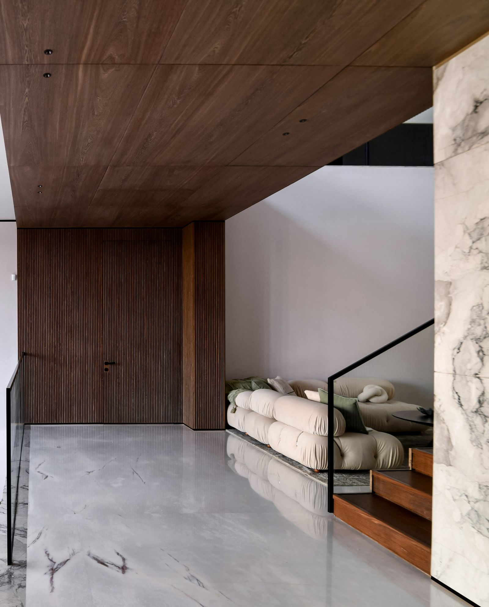
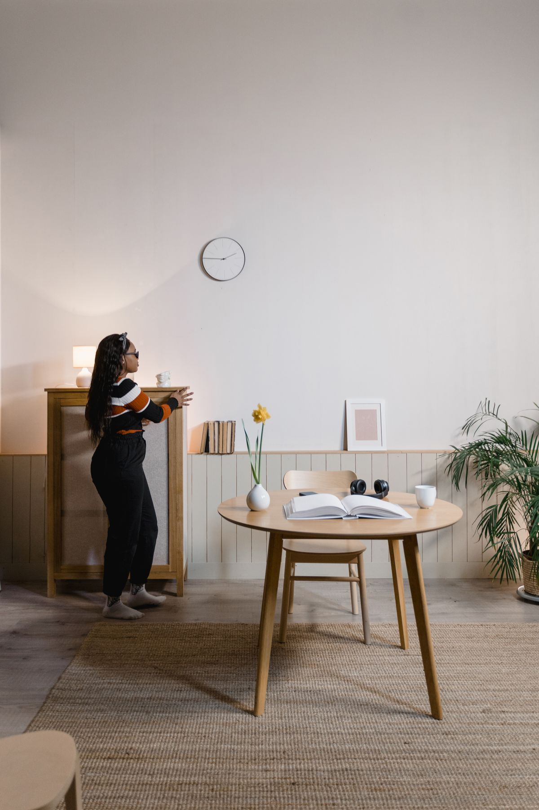

140 NE 39th St
Miami, FL 33137


Founded in Miami, Marlow is a small, deliberately selective studio. Every project is led start to finish by the same two hands, so the thinking behind the first sketch is still visible in the last detail installed.

Every project starts with the site itself — its light, its bones, what's already working. Nothing gets specified until we understand what the space is asking for, not just what the brief says it wants.
About Us + →What the work is built on. Three principles that run through every project we take on.

Considered interiors for the way people actually live


Spaces crafted through warmth, materiality, and clarity.
Start your project +From the first sketch to the final install, everything felt considered. The process never once felt like a compromise.
Daniel Ortiz
We'd worked with two other designers before Marlow. This was the first time the finished space actually looked like what we'd imagined.
James Calloway
The level of care in every material choice was obvious immediately. Nothing in this house feels like an afterthought.
Renee Castellanos